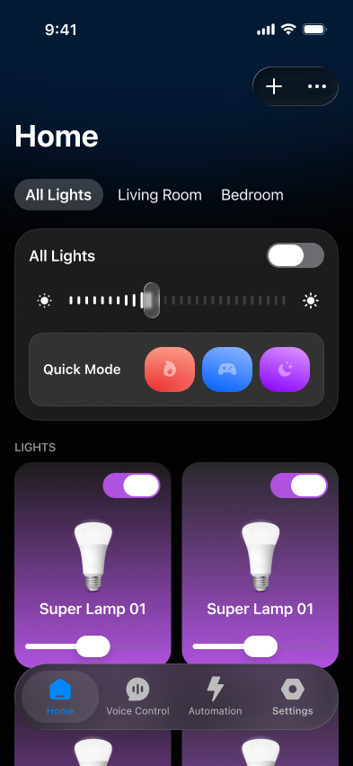

01 · The first signal
Home was not prioritising everyday behaviour
GA4 data from the original Home showed that changing colour was the most-used light-control action—ahead of turning lights on or off and adjusting brightness. App Store feedback also pointed to a need to change the colour of several lights at once.
Room, meanwhile, was visible directly on Home but was created and opened less often.
Colour adjustment was the most-used light-control action.
Redacted feedback excerpt about changing several lights’ colour together.
02 · The initial decision
Bring multi-light colour control forward
Quick Mode was added so users could change the colour of all lights at once. Room was moved into More options on Home, keeping it available without giving it equal priority to frequent controls.


03 · What the test revealed
The test validated Quick Mode—but exposed the cost of hiding Room
During the new Home test, Quick Mode accounted for 64% of recorded Home actions—strong evidence that multi-light colour control addressed a real need. But overall retention fell from 12% to 9.6%, and Home pay rate also declined.
Further cohort analysis showed 19.4% W1 retention among new users who created a Room within their first 24 hours, compared with 9.4% among those who did not. Moving Room into a harder-to-find location had affected a smaller but more valuable user group.
| Variant | Retention rate | % difference from baseline |
|---|---|---|
| ✓Baseline235 users | 12% | Baseline |
| ✓Variant A228 users | 9.6% | -19% |
Overall retention declined from 12% in the baseline to 9.6% in the test variant.
04 · The correction
Keep Quick Mode. Restore Room.
Quick Mode was retained because its 64% share of Home actions showed that it addressed a real need. Room was restored to its visible position on Home after cohort analysis showed its value to high-retention users.
After this correction, retention stabilised back at its previous level.

Redacted retention trend after Room was restored. Exact values remain placeholders.
05 · Closing
High frequency and high value can coexist
The lesson was not to choose between Quick Mode and Room. Frequent behaviour revealed an opportunity, while retention segmentation showed which existing experience could not be deprioritised. Using both signals led to a Home that served frequent actions without hiding a feature valuable to returning users.